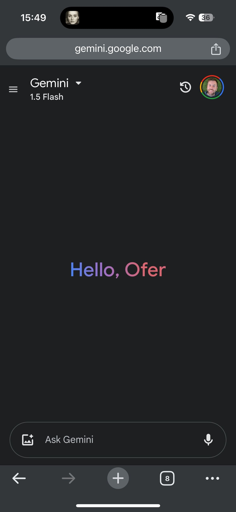

"היי, עופר."
פורסם במקור ב LinkedIn
"היי, עופר."
אין ספק ש-ChatGPT הוא זה שהביא את הבשורה ונהיה נחלת הכלל, אבל מה שגוגל עושים זה ברמת חגורה שחורה בביצוע. הם עוטפים את הדפדפן, יוצרים אפליקציה לנייד, תוכנה למחשב, נכנסים לתוך Docs, Sheets, למייל שלנו, ובעצם אין כמעט אף מוצר מבית גוגל שאנחנו צורכים (ויש הרבה) שהבינה המלאכותית של גוגל - Gemini - לא שם כדי לסייע לנו.
אז כשהוא בכל מקום ועם ממשק מושך וחיבור לרשת ליוטיוב ולמידע שלי אני מוצא את עצמי מתחיל לפנות אליו גם בשאלות, מה שנהגתי לעשות עם GPT.
שאפו, גוגל
